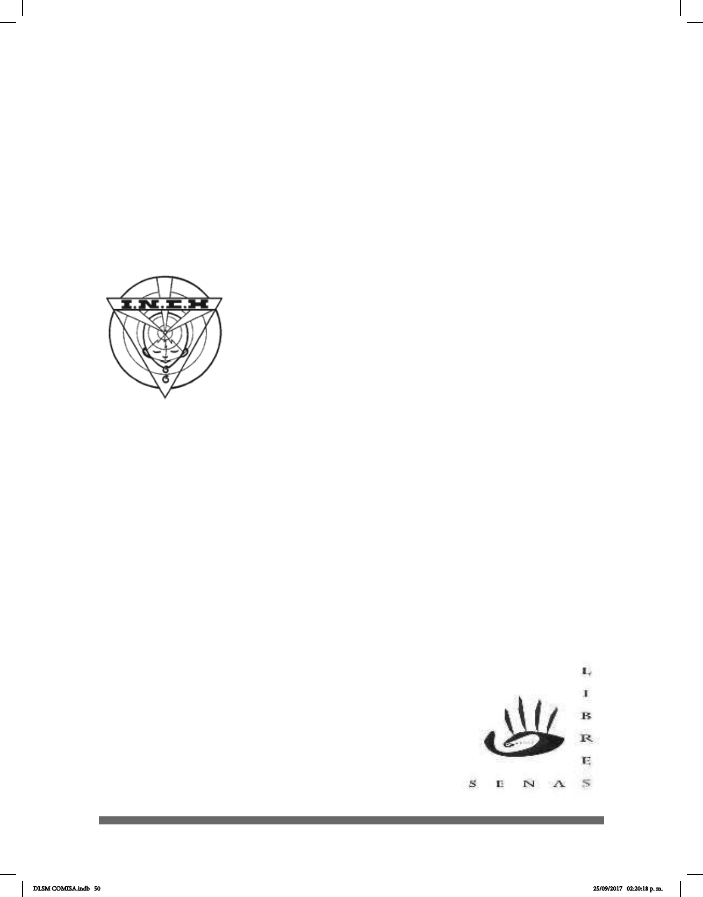

50
el Prof. Octavio Herrera Orozco como director. La idea fue consolidar la integración del
sordo al sistema educativo formal y de manera ocial a partir del ciclo escolar 1975-1976
de la SEP.
En los ochenta se empezó a utilizar la “Filosofía de la Comunicación Total” (referencia de
la cita textual), que consiste en emplear varios recursos en la enseñanza del sordo como
escritura, mímica, gestos y señas para facilitar la comunicación de los hipoacúsicos. De
esta manera nuevamente se tomó en cuenta a la LSM en el proceso de educación.
En 1981, la Dra. Donna Jackson de Maldonado fue la primera lingüista en investigar
y describir la LSM en la Ciudad de México bajo el auspicio de la Dirección General de
la Educación Especial de la SEP. El señor Leonardo Aroche
colaboró en la elaboración de este trabajo, así como los señores
Ignacio Sierra y Gustavo Couret.
En 1983 se publicó Mis primeras señas I (SEP-DGEE),
propiciando el estudio y la investigación de la LSM y en 1985
se publicó Mis primeras señas II (SEP-DGEE).
En 1986, el señor Luis Luna Guzmán se convirtió en el primer
profesor Sordo de Lengua de Señas en el Instituto Rosendo
Olleta (IRO). Fue el creador de muchas señas metódicas
utilizadas en Español Señado, como por ejemplo las señas
para ajos (prejos y sujos), verbos, sustantivos, etc. El Español Señado es una forma
de señar utilizando la gramática del español; es una lengua articial que se utiliza a
veces en la enseñanza de la lectoescritura en los niños sordos.
En 1986, el lingüista Thomas Smith-Stark desarrolló una investigación sobre las variantes
de la LSM en la Ciudad de México, Monterrey y Guadalajara. La obra se llama La Lengua
Manual Mexicana y se encuentra en El Colegio de México, en la Ciudad de México.
En 1987, Juan Carlos Miranda, junto con un grupo de sordos miembros de la Asociación
Mexicana de Sordos (AMS), iniciaron y concluyeron el Diccionario de Señas. Las
reuniones se realizaron durante varios meses en las instalaciones de la CONADE
(Comisión Nacional de Cultura Física y Deporte), con María Eugenia Rivera Lara la
como titular de Deportes para Sordos.
En 1993, gracias al Dr. Eduardo Montes de Oca Fernández,
se reincorporó la LSM en la licenciatura de Terapia de
Comunicación Humana y ahora también es parte de las
materias cursadas por los residentes de alta especialidad
pediátrica en el INR LGII (Instituto Nacional de Rehabilitación
Luis Guillermo Ibarra Ibarra.).
En 1994 se consolidó la Primera Asociación Nacional de
Intérpretes de lengua de Señas (ANDI) con Fidel Montemayor
Cetina como presidente.
DLSM COMISA.indb 50 25/09/2017 02:20:18 p. m.